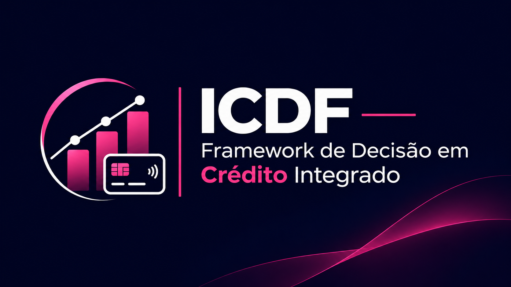

Operação Espelho Falso
Prova de conceito de investigação de deepfakes e possíveis fraudes biométricas.
Ver projetoPÁGINA PARA RECRUTADORES
Ciência de Dados • Fraudes • Inteligência Financeira
Sou graduanda em Ciência de Dados para Negócios pela Fatec Votorantim, com experiência em gestão comercial, financeira e administrativa, e foco em inteligência financeira, riscos e prevenção a fraudes.
Uma visão clara da minha formação, competências, experiências e projetos, com foco em dados, riscos e inteligência financeira.
Projetos acadêmicos e protótipos que demonstram métodos e competências aplicadas.
Prova de conceito de investigação de deepfakes e possíveis fraudes biométricas.
Ver projeto
Framework de decisão de crédito com avaliação de risco e qualidade dos dados.
Ver projetoEXPERIÊNCIA
Gestão comercial, financeira e administrativa desde 2020, com foco em processos e resultados.
Gerência financeira e comercial. Histórico relatado de crescimento de receita e recuperação de inadimplência.
Atuação em operações e gestão de negócios, indicadores e negociação financeira.
Graduação em Ciência de Dados para Negócios, em andamento.
COMPETÊNCIAS
Estudos e aplicações em dados, programação, análise de riscos e inteligência de negócios.